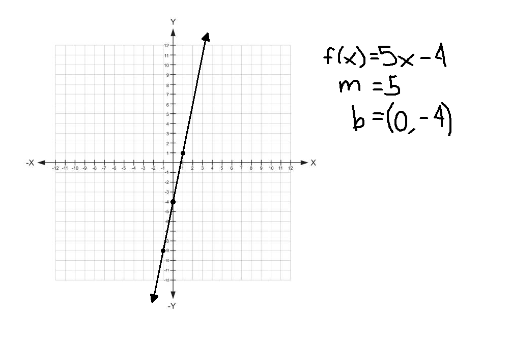
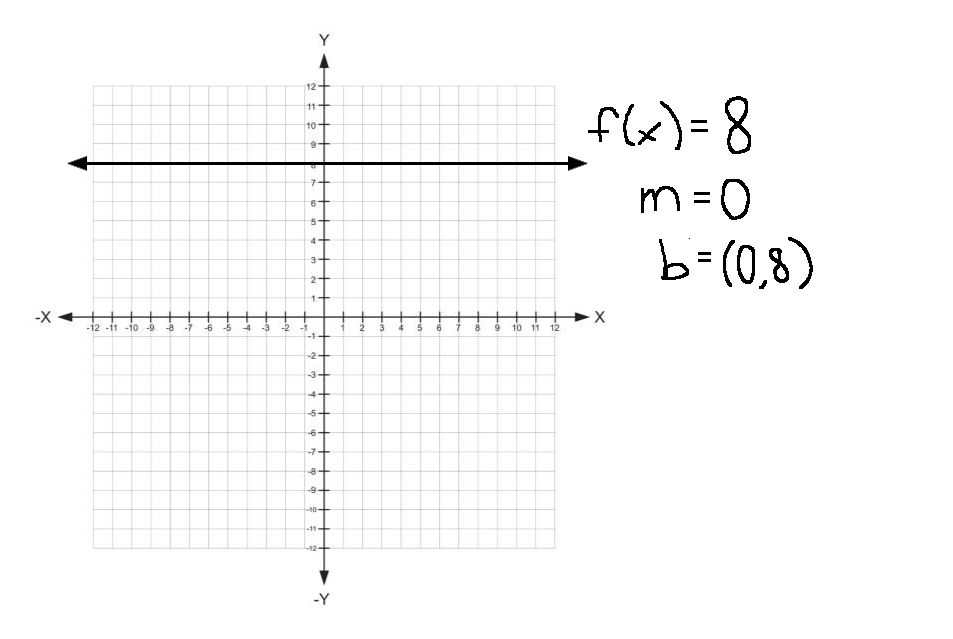
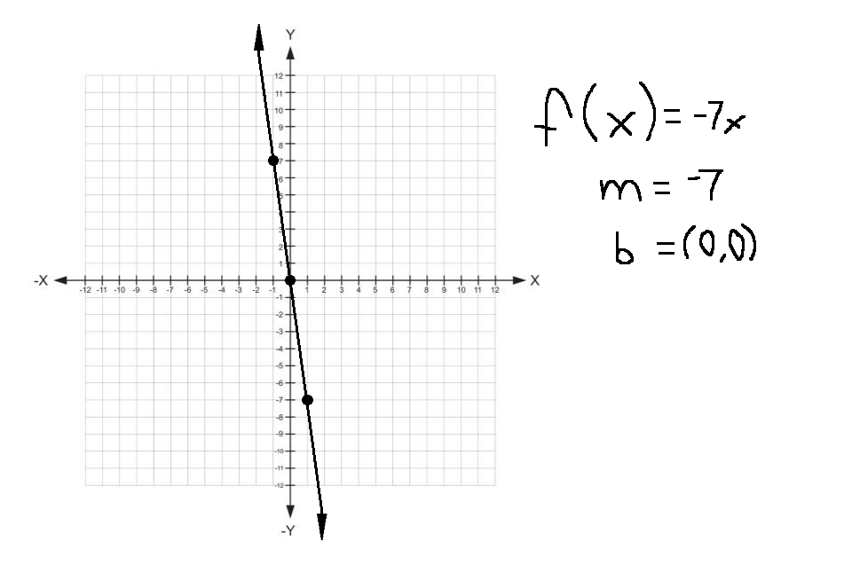

\
\Welcome to Graph of Linear Function
Linear Function
A linear function is defined by f(x) = mx + b,where m and b are real numbers. Its graph
is a line with slope (m) and y-intercept (b).
EXAMPLE

EXAMPLE

EXAMPLE

END - Hope you learned something from this page.
Home